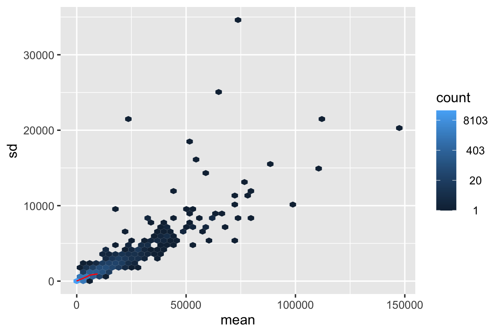
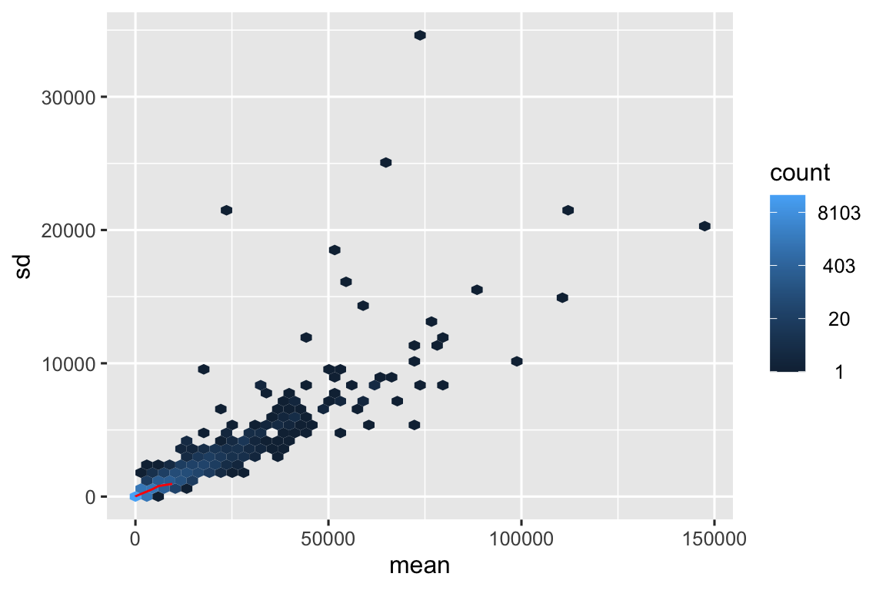
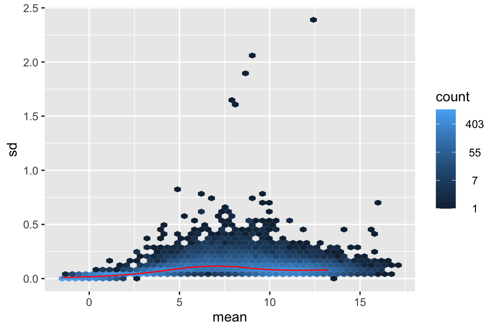

Mostra il codice R
meanSdPlot(assay(dds), ranks = FALSE)
meanSdPlot(assay(dds), ranks = FALSE)
Per stabilizzare la varianza e rendere i dati più adatti alle assunzioni del modello statistico, possiamo applicare trasformazioni come la Variance Stabilizing Transformation (VST) o la Regularized Log Transformation (rlog). La scelta della trasformazione dipenderà dalle caratteristiche dei dati e dagli obiettivi dell’analisi.
rlog <- DESeq2::rlog(dds, blind = TRUE)
meanSdPlot(assay(rlog), ranks = FALSE)
---
params:
mycondition: infection
mynum: InfluenzaA
mydenom: NonInfected
mypval: 0.01
myfc: 0.8
mypadj: fdr
---
```{r}
#| echo: false
#| message: false
#| warning: false
source("_common.R")
library(tidyverse)
library(DESeq2) # BioC
library(RColorBrewer)
library(pheatmap)
library(ggrepel)
library(cowplot)
library(DT)
library(scales)
library(vsn) # BioC
library(apeglm) # BioC
library(rmarkdown)
library(gt)
readcounts <- readRDS("data/readcounts.rds")
coldata <- readRDS("data/coldata.rds")
dds <- readRDS("data/dds_fitered.rds")
```
# Trasformazione dei dati {#sec-preproc-trans}
## Grafico Media/Deviazione standard
```{r}
#| out-width: 100%
meanSdPlot(assay(dds), ranks = FALSE)
```
::: {.content-hidden when-meta="features.advanced_analysis"}
Un grafico Media/DS (Deviazione Standard) è uno strumento utile per valutare l'efficacia dei metodi di normalizzazione dell'abbondanza genica, specialmente nell'analisi dei dati RNA-Seq. Ecco come funziona:
**1. Le basi**
- **Media:** Il livello di espressione medio di un gene in tutti i campioni del tuo set di dati.
- **Deviazione Standard (DS):** Una misura di quanto varia l'espressione di un gene tra i tuoi campioni.
**2. Costruire il grafico**
- **Asse X:** L'abbondanza media del gene (di solito su una scala logaritmica).
- **Asse Y:** La deviazione standard dell'abbondanza del gene (anche spesso trasformata logaritmicamente).
- **Ogni punto:** Rappresenta un singolo gene nel tuo set di dati.
**3. Interpretazione**
- **Scenario ideale:** Dopo una normalizzazione efficace, idealmente dovresti vedere una linea orizzontale o una tendenza relativamente piatta nel grafico. Ciò indica che la deviazione standard (variabilità) dell'espressione genica è coerente tra i diversi livelli di espressione media.
- **Problemi di normalizzazione:** Se vedi una forte tendenza (ad esempio, una forma a imbuto in cui la DS aumenta con la media), suggerisce che il tuo metodo di normalizzazione non ha completamente tenuto conto di bias sistematici. Questi bias potrebbero essere dovuti a:
- **Differenze nella dimensione della libreria:** I campioni con più letture tendono ad avere una varianza maggiore.
- **Bias della lunghezza del gene:** I geni più lunghi tendono ad avere più letture e quindi una maggiore varianza.
- **Bias del contenuto di GC:** I geni con diverso contenuto di GC possono essere influenzati in modo diverso durante la preparazione della libreria.
**4. Perché è importante**
- **Analisi accurata dell'espressione differenziale:** La normalizzazione mira a ridurre questi bias tecnici in modo da poter identificare con sicurezza le vere differenze biologiche nell'espressione genica tra i gruppi (ad esempio, trattato vs. controllo). Un grafico Media/DS ti aiuta a vedere se il metodo scelto raggiunge questo obiettivo.
- **Confronto tra metodi di normalizzazione:** Puoi utilizzare i grafici Media/DS per confrontare le prestazioni di diverse tecniche di normalizzazione sui tuoi dati e scegliere quella che stabilizza meglio la varianza.
**Esempio:**
Immagina un grafico Media/DS in cui la deviazione standard è molto più alta per i geni con espressione media elevata. Ciò suggerisce un bias correlato alla profondità di sequenziamento o alla lunghezza del gene. Un buon metodo di normalizzazione dovrebbe ridurre questa tendenza, portando a una distribuzione più uniforme delle deviazioni standard su tutti i livelli di espressione.
**In sintesi:** Il grafico Media/DS è uno strumento diagnostico visivo che ti aiuta a valutare la qualità della normalizzazione dell'abbondanza genica. È un passaggio chiave per garantire l'accuratezza e l'affidabilità delle analisi a valle come l'espressione genica differenziale.
:::
## Trasformazione
Per stabilizzare la varianza e rendere i dati più adatti alle assunzioni del modello statistico, possiamo applicare trasformazioni come la Variance Stabilizing Transformation (VST) o la Regularized Log Transformation (rlog). La scelta della trasformazione dipenderà dalle caratteristiche dei dati e dagli obiettivi dell’analisi.
::: {.content-hidden when-meta="features.advanced_analysis"}
## VST vs. rlog
Sia la VST (Variance Stabilizing Transformation) che la rlog (Regularized Log Transformation) mirano a trasformare i dati di conteggio per stabilizzare la varianza tra i geni con diversa espressione. Questo è importante perché il modello statistico di DESeq2 assume che la varianza sia approssimativamente costante per tutti i geni.
### Quando scegliere VST?
- **Analisi di Espressione Differenziale**: La VST è generalmente preferita per l’analisi dell’espressione differenziale, poiché è stata specificamente progettata per questo scopo.
- **Visualizzazione di Heatmap e PCA**: La VST è adatta per visualizzare i dati in heatmap e PCA, in quanto preserva bene le distanze tra i campioni.
- **Dataset di Grandi Dimensioni**: La VST è computazionalmente più efficiente della rlog, quindi è preferibile per dataset con molti geni o campioni.
### Quando scegliere rlog?
- **Esplorazione dei Dati**: La rlog può essere utile per esplorare i dati in modo più intuitivo, poiché produce valori che sono più simili ai log2 fold change.
- **Clustering**: La rlog può essere preferita per il clustering dei geni, poiché tende a separare meglio i cluster.
- **Dataset di Piccole Dimensioni**: La rlog può essere più accurata della VST per dataset con pochi geni o campioni.
:::
### VST
```{r}
#| out-width: 100%
vst <- DESeq2::vst(dds, blind = TRUE)
saveRDS(vst, "data/vst.rds")
meanSdPlot(assay(vst), ranks = FALSE)
```
### rlog
```{r}
#| out-width: 100%
rlog <- DESeq2::rlog(dds, blind = TRUE)
meanSdPlot(assay(rlog), ranks = FALSE)
```